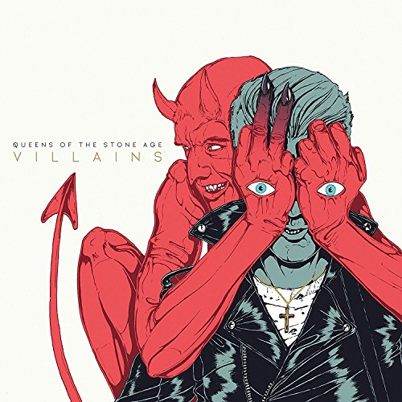
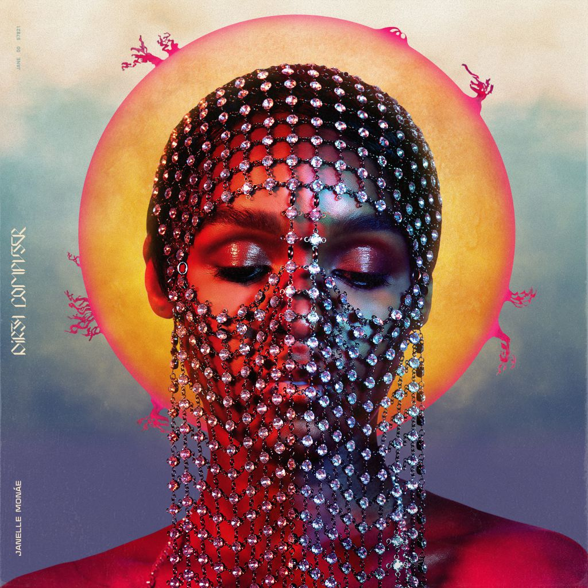

Queens of the Stone Age - Villains
Villains has some of my favorite rock songs ever on it. Feet Don't Fail Me is an amazing opener, with a full, somewhat funky guitar in the background driving the core of the song. The funky guitars don't take away from the hard rock feel, though. The song Domesticated Animals follows suit with a similar hard rocking vibe, and a killer melody, especially at the end. Fortress has some amazing lyrics on it in addition to some great vocals from frontman Josh Homme. Stay tuned for a more in-depth review of this album.

Janelle Monae - Dirty Computer
Dirty Computer is probably my favorite pop album that will come out in 2018. Songs like Screwed and Make Me Feel have an incredibly sweet pop sound with bubblegum guitars while rap on tracks like Django Jane show off Monae's huge talent range. The (sometimes direct) statements on race and gender are also not to be understated. With this album, Monae does a fantastic job of creating a series of irresistably catchy pop tunes with real meaning behind the music.
JPEGMAFIA - Veteran
From the smooth, soothing synths on 1539 N. Calvert to the jarring geiger-counteresque clicking that introduces Thug Tears, Veteran is a striking project. Peggy brings some of the most energized and inventive verses I've heard in the past year on top of production that beautifully transitions between off-the-wall highs and brooding, spiteful lows. Veteran strikes a near-perfect balance between experimental and calculated, leaving a lasting impression on the listener.
Jack White - Boarding House Reach
Although Boarding House Reach is not an easy listen, it is passion-packed, making it Jack White's most entertaining solo album yet. White seems to really be losing his mind, shown in his frighteningly brilliant vocal performance; on tracks like Connected By Love, he sounds as if his mind could break to the point of insanity at any moment, delivering lines such as "Let's put it all to bed / forgive me, and save my from myself" with an urgency that begs the listener to take White seriously.